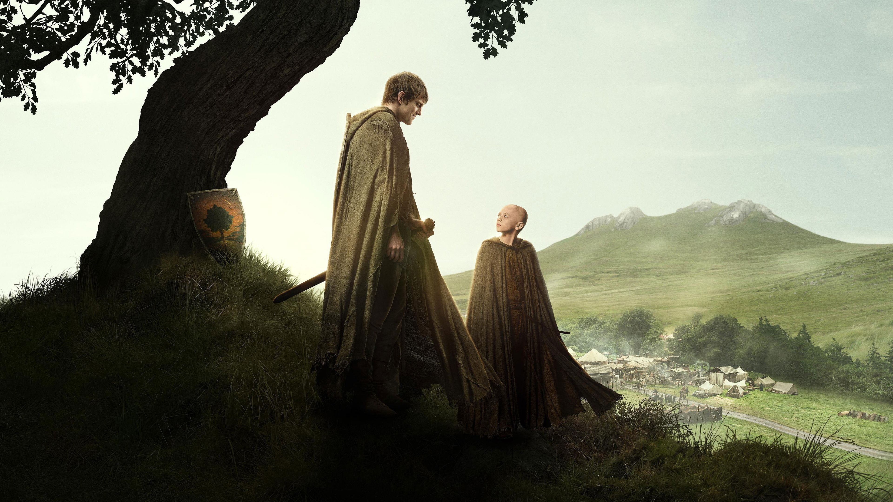

O Cavaleiro dos Sete Reinos
Ambientado em uma época em que a linhagem Targaryen ainda detém o Trono de Ferro e a memória do último dragão ainda não desapareceu da memória dos vivos, grandes destinos, inimigos poderosos e façanhas perigosas aguardam esses amigos improváveis e incomparáveis.